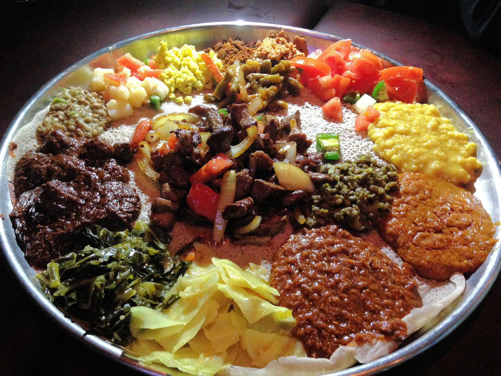

RasEthioopia bar and lounge
Welcome to The number ethiopian restaurant in Saint paul minnesota
 Mostly eveyone loves to travel.
It is exciting to see new places and experience the different customs,
etertainment and foods of other cultures.
Many people may not get the chance to travel because of the time constraints or other
obliagation, but they are still able to sample other culture through food.
Imagine a trip to an anicient country, shrouded in mystery
, a country that Americans don't know too much about today.
It is a country of lush mountain highlands and arid lowlands wit a rich
cultural and religious history that maintains many of its customs to this day.